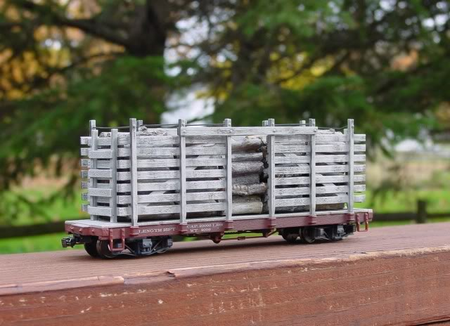

Kitbashing an On2 Pulpwood
car
from a Bachmann On30 Pulpwood
car.
September 7, 2008.
Another On2 project! 
A new piece of On2 rolling
stock! so far I have the On2
coach done,
a Sandy
River Car Shops boxcar kit complete except for painting, and some flatcars
being built with the Two
Foot Projects group still underway.
After Bachmann came out with
the On30 Forney, based on Maine 2-foot gauge locomotives, they needed some
"Maine-style" rolling stock! They havent actually come out with specific
Maine rolling stock yet, (im sure they will eventually) but they did
"re-tool" one of their existing
cars to make a Maine-ish looking pulp car.
They used their existing
flatcar, put the "low-profile" trucks under it, made some new
side racks, a nice looking
wood load, and released it..

It looks good!
definately captures the feel of the Maine 2-footer pulp cars, but because
its based on the older Bachmann On30 line, which is based primarily on
3-foot gauge prototypes, the car has a few issues that make it "not quite
right" for a Maine car.
I compared the dimensions
of the stock Bachmann car with a drawing by James Dunlop
of SR&RL pulpcar No.
240, and recorded the major differences:
The only dimensions im going
to change are the overall width of the car,
and height of the deck off
the rails. those are the "biggies" than make a car look
Maine-ish..narrow width
and "low-slung" height.
So the width of the car needs
to be narrowed by a full centimeter! 0.4 of an inch.
narrowing from a prototype
7.5 feet down to 6 feet.
and the height of the car
deck needs to be reduced by 2 milimeters.
The length of the Bachmann
car is 25 feet..SR&RL No. 240 (my prototype drawing)
was a 28-footer, and going
through SR&RL rosters, it looks like the prototype
pulpracks were mostly 28-footers,
and a few at 33 feet, none were 25 feet..
but im not going to bother
to change the length..not worth the effort IMO.
The Bachmann wheels are also
too large..
the prototype cars had 20"
diameter wheels..
the Bachmann wheels scale
out to 21.5".
thats a difference of 0.8mm
in 1/48 scale...I could use new wheelsets, or all-new
trucks for that matter,
but "the point" of this bash is to see if I can use as much of the
original Bachmann car as
possible..including the trucks!
If this works well, I might
someday build a whole train of these pulpwood cars..
maybe as many as seven to
ten cars! so there is no sense in buying new trucks for
them all if its not absolutely
necessary..
And the height of the "racks"
is a bit too tall on the Bachmann car, compared to the prototype SR&RL
car..but im not going to alter the racks..im going for an overall "look"
of a Maine car. Width of the deck and height off the rail are IMO very
important to that look, other details less important..if I was scratch-building
a car, I could make all these dimensions more exact, but for a kitbash
of an existing car, im not as concerned with the minor issues.
There was a ton of prototype
variation in these cars anyway, as far as these minor
details are concerned.
More thoughts on regauging
to On2.
There has been much debate
on the On2
group concerning "adapting existing cars" versus "flat-out scratchbuilding"..
For something as basic as
a flatcar, I agree that scratchbuilding is pretty simple, quick and easy.
Check out the On2 flatcar project on the Two
Foot Projects group.
And for Boxcars, it has also
been pretty well established that trying
to adapt an On30 Bachmann box car to an On2 Maine car isnt really worth
the effort. again, it would
probably be easier, and
result in a much better model, to simply scratch-build the car..
That is mainly because the
Bachmann car is SO different than a Maine boxcar.
Although some people have
had good luck with adapting Bachmann boxcars..
I will have to explore that
more.
But I dont agree that scratchbuilding
is ALWAYS easier, quicker or cheaper!
In this particular case,
with the pulp car, I built a decent looking "Maine style car" in 3 hours
and for only $35..I would argue that in this case, kitbashing the existing
Bachmann car was easier than scratchbuilding!
And the same for my On2
Coach bash..
yes, that 'bash was fairly
involved, and took a lot longer than this pulpwood car,
but even so, it was probably
a lot easier than scratchbuilding an entire passenger car.
So the "kitbash vs. scratch-build"
debate really has a lot of variables..
it really depends on how
good your "starting point" is for the 2-footers..
Bachmann On30 boxcar, based
on 3-foot gauge prototype = not so great for Maine On2.
Older On30 flatcar, with
the gigantic trucks = not so great for Maine On2.
In those cases, kitbashing
isnt really worth the hassle..because the stock "starting models" are really
very far off..you are better off scratchbuilding.
But in the case of the Pulpwood
car..the starting model isnt bad at all!
just needs some tweaking,
and it turns out pretty good.
So! first up, lets take a
look at the stock On30 Bachmann car, before any modifications
are made:


Nice looking car!
Normally im not a huge fan
of "factory applied weathering"..
I usually think its looks
pretty bad, and would prefer to do it myself..
but in this case, its not
bad! subltle but effective..
if I do more of these cars
(which I probably will) I will probably add MORE weathering,
more to some cars, less
to others, so they dont all look the same.
Lets begin cutting this thing
apart!
Inspired by Don's
combine project, im going to keep tabs on how long this project takes!
I have never done that before,
but it might be interesting.

Step one, (above), disassemble
the entire car.
tools needed - small phillips
head screwdriver.
elapsed time - one minute.
(seriously!)

Remove the air brake, (because
the frame will be cut right in its path)
its glued on..I just cut
it off with the x-acto knife.

Bring out the saw!
This is a "mini table saw"
that I first bought for my On2 coach project.
details on the saw can be
found here.

So I need to remove 1 centimeter
total from the width of the car..
after taking a look at the
frame/floor assembly, I deceided to remove 5mm down
each side, first cutting
right down the edge of one of the sills.
I lined up a brass "fence",
clamped it down..safety glasses on, and slice!

Again, I stopped the saw
to take a few pictures.

Here (above) is the frame
after the first wo cuts are finished.
I cut the frame and deck
together..I didnt glue them together before cutting, but
on future cars, I will glue
them together before cutting...will make things easier.

Now, to make the other two
cuts..I need the final car to be 10mm narrower than the original car..The
saw blade has a kerf of about 1mm..so really I should only remove 4mm from
each side, to account for the kerf..So I re-set the brass fence so it was
only 4mm away from the blade, and made the second cuts..The photo above
shows everything after all cuts are made.

On the right, the final three
pieces of the frame..on the left, the cut-out bits,
to go into the scrap bin.
total elapsed time - 40 minutes..
most of that time spent
setting up the saw!

I neatened-up the pieces,
scraping away the flash from the cutting with the x-acto blade,
a little filing here and
there, then glue the three pieces back together! pressing tight to
get a good glue hold (I
use plastruct "plastic weld" glue, brushing it on and around the joints)
glue the brake detail back on..then take a break for dinner while it dries!
total elapsed time - 50 minutes.

Coming back to the car after
its dry..bottom looks great!
top deck looks not so great..the
cut lines are very visable..
but! thats a non-issue in
this case! because im going to re-use the pulpwood load!
so the cuts in the floor
wont even be visable!
At the end-sills, where the
cuts are visable, I will probably fill the gaps with some green squadron
putty and re-paint.
but as for the decking, "if
I cant see it, I dont care what it looks like"! 
Im not going to do any extra
work to the floorboards at all..
If this was, say, a gondola,
where the floorboards are visable, then I would probably narrow only
the frame, and simply add new wood floorboards, of the correct width,
across the top of the frame.
Day 2
September 8, 2008.

On to the trucks!
The trucks (above) are the
newer Bachmann "low profile" trucks, much nicer looking,
(and much nicer for Maine
cars!) than the older "standard" Bachmann On30 trucks,
which look like this:
Those trucks are FAR too
large for the 2-footers! too tall, larger wheels than the low-profile trucks,
and made the car impossible to lower to a reasonable height.
The new "low profile" trucks
are SOO much better! thanks Bachmann!
I will simply keep the Bachmann
sideframes as-is..I think they look fine.
all I have to do is narrow
the axles and narrow the truck width..very easy.
There has been some discussion
on the On2 forum about re-gauging these Bachmann trucks..the Bachmann trucks
also have "nasty bosses on the inside of the axle box"
(to quote "stuart uk" on
the On2 forum)
So I will look for a way to reduce those as well.
And a good look at the Bachmann
On30 trucks, as compared to other On2 trucks,
can be found on the On2
FAQ here.

Using my standard method
of regauging the wheelsets..
snip 4mm out of the center
of the axles, slide the resulting "stubs" into a new axle made
of brass tube..and done!
although in this case..I
ran into a problem!
I took one of the cut wheels
to my local hobby shop, who is well stocked with brass
tubing..but nothing fit! 
One tube was close..but
too loose..the axle wiggled around too much..
I need a *tight* fit..
but "the next size smaller"
was too small! there was nothing "just right"..
So I moved down the aisle
to the styrene tubing..all the same sizes as the brass tuning!
So finally I checked some
square styrene tubing..found one that fits!
its the 1/8" square tube..the
axles press in tight, distorting the tube somewhat..but its
a nice solid fit..so I went
with it!

Above, one regauged axle,
compared with an unmodified On30 truck.

Now the trucks also have
to be regauged..same basic method.
cut 2mm out of each side,
and glue the bits back together.
I used some styrene blocks
to make a good joint.

Thats it for tonight..im
leaving the trucks to dry (glue) and will come back to them
tomorrow.
Total elapsed time - 1 hour,
50 minutes.

Trucks work fine! by themselves..but
they caused a new problem!
I filed down the axle mounts
by 2mm, to reduce the ride-height of the car..
the wheels now hit the frame!
hitting the center and intermediate sills,
and the big coupler box..
I would have cut these frame
bits away BEFORE gluing the frame to the deck!
but I didnt know yet what
would need to be cut away..for future bashes, I will know,
and will simply cut the
frame *before* gluing it to the deck.

Some quick work with a small
saw and the x-acto blade, and the frame bits are
removed.


Check out the truck swing!
thats very good..
of course, now there is
no coupler box! but thats not really a problem, because the stock
Bachmann coupler box would
have been no good anyway..wrong height..so its not a big deal it had to
be removed. (I had to move one stirrup step..because the trucks hit it...you
can see it in the upper left corner of the pic above..)
As for the "nasty bosses"..I
didnt bother to change anything..yes, the trucks might end
up being a bid wide overall..but
they are gauged to On2..and keeping the booses results
in nice rolling characteristics..keeping
the original "needle bearings" on the ends of the axles..its all good!
Total elapsed time
- 2 hours, 35 minutes.
Day 3
(actually its "evening 3"..Im working on this about 1 hour a night)

Have to cut the wood load
too!
it needs to be narrowed..
I cut it approx along these
lines:

removing the "second row"
of logs.
I used the mini table saw,
and hacked away at it.
A few words about cutting
this kind of plastic..
I dont know what kind of
plastic it is, but if you are going to cut it with any kind of
power saw, do it OUTSIDE!!
preferably with a stiff breeze to your back, so the dust
blows away from you, safety
glasses are a given, and I would also recommend a dust
mask!..this plastic makes
some nasty fumes when heated, (saw friction)..
I will always cut this kind
of plastic outdoors if using any power tools..power saw,
dremel tool, etc..if using
hand saws, indoors is probably fine.
This kind of plastic also
shatters easily if dropped!
I was hoping to have only
three large pieces cut off..but one piece dropped and broke
into many smaller pieces
on the deck! and I lost a few bits in the lawn..
I had to fill in the gaps
with pieces of real twigs, which looks pretty good actually!
Paint all the white exposed
plastic brown, glue the wood load back together, add new twigs where needed..and
DONE!!
Total elapsed time = 3 hours
& 20 minutes, over three evenings.
Not bad!
fairly easy, and makes a
decent looking Maine 2-foot pulp car,
mostly prototypically accurate,
except for overall length.
I was hoping to find an "unmodified"
pulpcar to compare it with, and take photos of my modified car alongside
an unmodified On30 version..but thats not going to happen anytime soon,
so I will just finish up this page without doing that..
Someday I will probably do
more of these pulpcar modifications, so I will do that comparision then..
meanwhile, I took the pulpcar
outside and photographed it with my entire "On2 fleet"! ;)
which currently consists
of only four cars, and no locomotive to go with them yet..
although locomotives are
in the works..
Placing the pulpcar with
the other cars really shows that it "fits in"!
having it the correct width
really makes it look at home with the other cars..
also, the deck height now
matches that of the boxcars, also helping with that
"family look"..so lowering
the height by 2mm was worth it.
here are the rest of the
pics:


Conclusion:
well..its ok..its
not bad, I like it, but I don't love it.
I think it looks fine, but
I think I am slowly becoming an On2 "purist"! ;)
I have to admit that it
does actually bother me that the car is a little too
short and a little too tall!
For future pulp cars, im
not sure if I will adapt more Bachmann cars,
or go the "kit-built" or
"scratch-built" route to get better accuracy..
hmmmm..time will tell!
thanks for watching,
Scot
Page
started September 8, 2008
Email
- sscotsman@yahoo.com
Return
to my On2 projects page
Return
to my main page
|